关于保护工作台
从残片到证据，
重建可验证的联系
项目将图像、测量、经文证据和人工裁决置于同一条可追溯工作流中。系统可以帮助定位关联，但不能替代研究者对出处、文本和修复边界的判断。
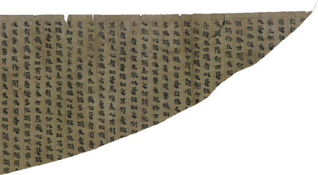
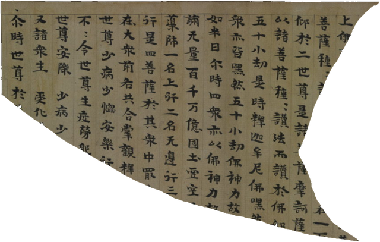
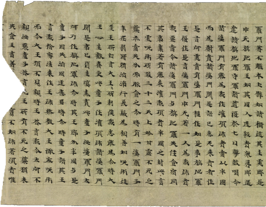
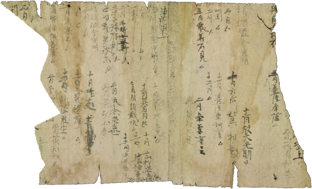
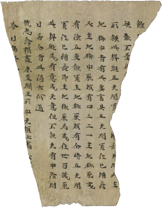
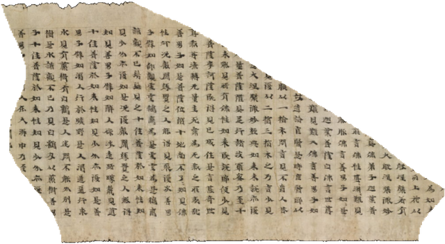
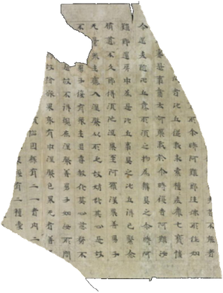
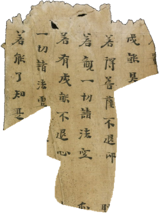
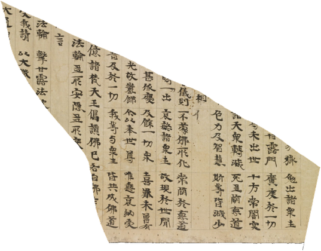
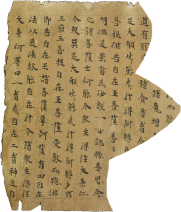
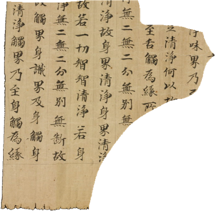
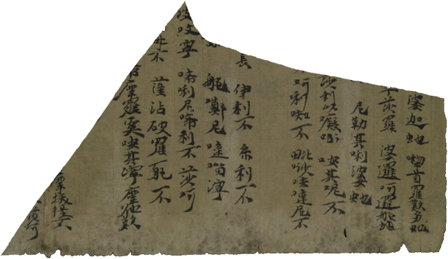
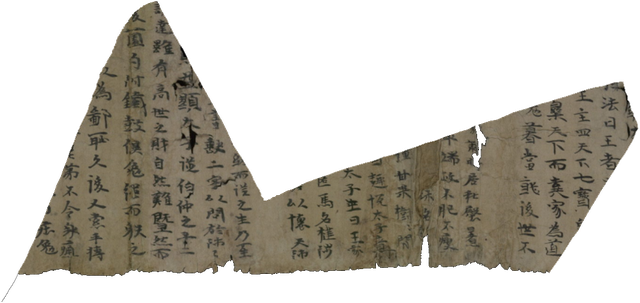
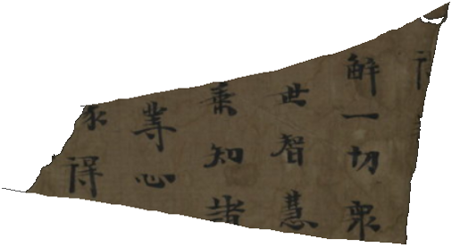
残片之间的联系，
可以被证据重新验证。
敦煌文献在百余年流散中被拆裂、分藏、命名各异，残片之间的关联常被收藏边界和记录方式切断。我们的工作是把真实的残片、图像测量与文献证据重新放进可审阅的关系中，让每一项判断都能回到可核验的出处。
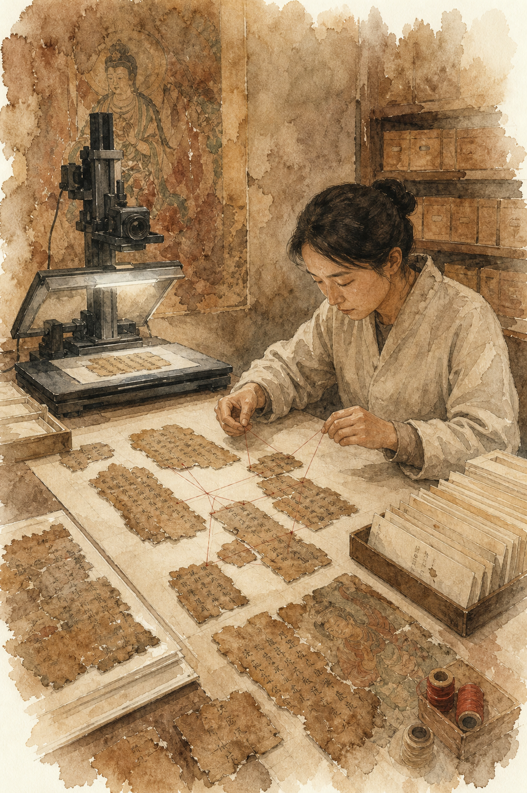
真实案例库
可追溯的残卷与运行证据
案例图像来自项目真实数据；环境图只承担版式，不进入证据链。点击不同档案，可以查看它在研究路径中的作用与当前状态。
SCIENCEDB · REAL REJOIN
真实缀合组
开放数据 · CC BY-NC-SA 4.0用于观察同源残片的断边、位姿和全景关系，是缀合机制的真实数据基础。
数据、来源与学术边界
真实内容必须能回
到出处
残片来自ScienceDB、数字敦煌和项目登记案例；经文证据来自固定版本CBETA；Official AutoHDR结果保留固定提交、哈希与审计文件。
- 生成图只用于环境与版式，不进入证据链。
- Embedding不替代原文字符匹配。
- 单侧上下文只定位，不伪造补字。
- 工程PASS不自动成为人工或学术PASS。
观察不重绘历史损伤
检索不把相似文本当作原文
修复只进入人工批准区域
审计保留输入、证据与输出
ScienceDBDOI 10.57760/sciencedb.j00001.01083
CBETA4,868经 · 12,557,684记录（保存部署）
Official AutoHDR固定提交 d92b223b3d927
当前服务离线 · Replay可用